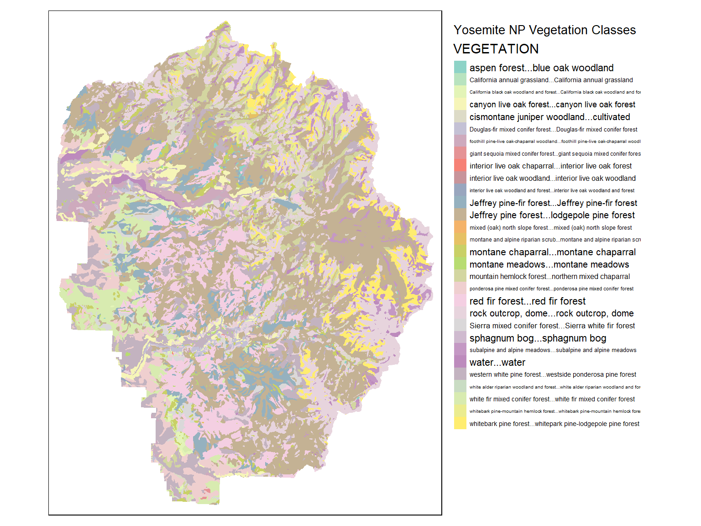
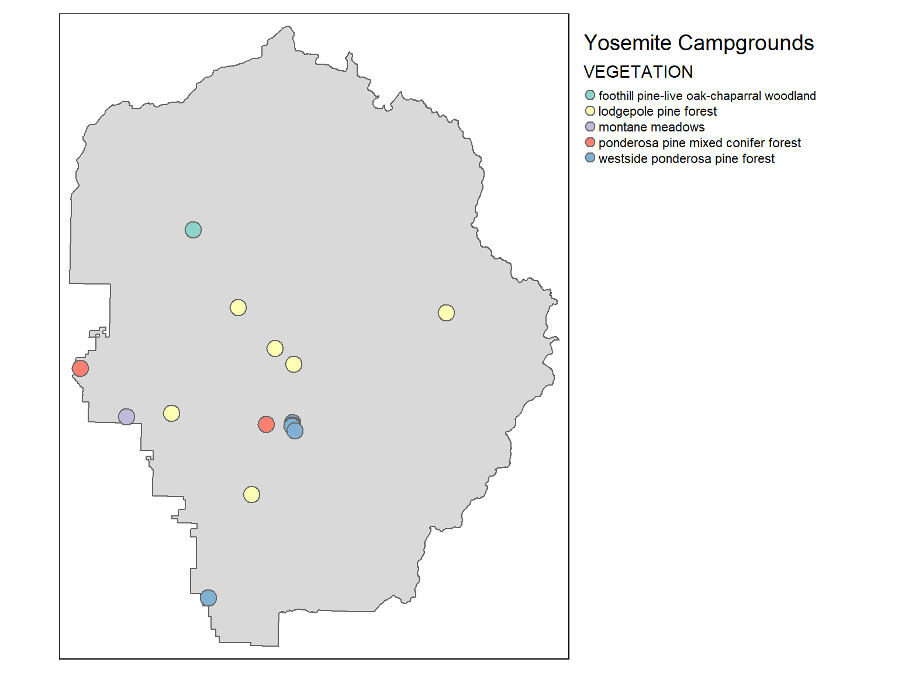

Spatial Join
Spatial join is like dplyr::left_join(), but instead of joining two tables on a matching column you join them based on their spatial relationship (e.g., intersects).
You can do a spatial join with:
st_join(x, y, join)
Example: Find the vegetation type for each of Yosemite’s Campgrounds
Import the vegetation layer and the dbf file which contains the legend:
## Import the vegetation layer
yose_veg_utm <- st_read(dsn="./data", layer="veg37")
## Import the legend
dbf_fn = file.path(".", "data", "veg37_alliances.dbf")
file.exists(dbf_fn)
yose_veg_leg <- foreign::read.dbf(file = dbf_fn)
glimpse(yose_veg_utm)
## Reading layer `veg37' from data source `D:\Workshops\R-Spatial\rspatial_mod\outputs\rspatial_data\data' using driver `ESRI Shapefile'
## Simple feature collection with 6512 features and 26 fields
## geometry type: POLYGON
## dimension: XY
## bbox: xmin: 246268.6 ymin: 4152706 xmax: 306269.9 ymax: 4229672
## projected CRS: NAD83 / UTM zone 11N
## [1] TRUE
## Rows: 6,512
## Columns: 27
## $ AREA <dbl> 1141684.308, 1182450.773, 8569824.715, 143326.612, 7157452.521, 3717547.479, 5311.212, 115763...
## $ PERIMETER <dbl> 8249.203, 6247.234, 20526.994, 1990.976, 23259.286, 19649.970, 422.512, 29390.301, 1761.167, ...
## $ VEG37_ <int> 2, 3, 4, 5, 6, 7, 8, 9, 10, 11, 12, 13, 14, 15, 16, 17, 18, 19, 20, 21, 22, 23, 24, 25, 26, 2...
## $ VEG37_ID <int> 1, 2, 3, 4, 5, 6, 7, 8, 9, 10, 11, 12, 13, 14, 15, 16, 17, 18, 19, 20, 21, 22, 23, 24, 25, 26...
## $ RIM_CODE <dbl> 889, 60, 53, 889, 270, 637, 60, 524, 60, 529, 60, 615, 637, 889, 60, 529, 60, 899, 270, 60, 2...
## $ FIRE_REGIM <chr> "whitebark pine - mountain hemlo", "barren", "eastside shrub", "whitebark pine - mountain hem...
## $ W1 <chr> "PIAL10", "BARREN", "ARTR10", "PIAL10", "TSME10", "MEADOW", "BARREN", "PICO11", "BARREN", "LA...
## $ W2 <chr> NA, NA, "MEADOW", NA, "PICO11", "SALIX", NA, NA, NA, NA, NA, "PIAL10", "SALIX", NA, NA, NA, N...
## $ W3 <chr> NA, NA, NA, NA, NA, NA, NA, NA, NA, NA, NA, NA, NA, NA, NA, NA, NA, NA, NA, NA, NA, NA, NA, N...
## $ W4 <chr> NA, NA, NA, NA, NA, NA, NA, NA, NA, NA, NA, NA, NA, NA, NA, NA, NA, NA, NA, NA, NA, NA, NA, N...
## $ W5 <chr> NA, NA, NA, NA, NA, NA, NA, NA, NA, NA, NA, NA, NA, NA, NA, NA, NA, NA, NA, NA, NA, NA, NA, N...
## $ W6 <chr> NA, NA, NA, NA, NA, NA, NA, NA, NA, NA, NA, NA, NA, NA, NA, NA, NA, NA, NA, NA, NA, NA, NA, N...
## $ W7 <chr> NA, NA, NA, NA, NA, NA, NA, NA, NA, NA, NA, NA, NA, NA, NA, NA, NA, NA, NA, NA, NA, NA, NA, N...
## $ W8 <chr> NA, NA, NA, NA, NA, NA, NA, NA, NA, NA, NA, NA, NA, NA, NA, NA, NA, NA, NA, NA, NA, NA, NA, N...
## $ DOMINANT <chr> "whitebark pine", "barren", "sagebrush", "whitebark pine", "mountain hemlock", "meadow", "bar...
## $ ALLIANCE <chr> "a1", "z1", "g1", "a1", "a5", "h1", "z1", "a2", "z1", "z2", "z1", "a3", "h1", "a1", "z1", "z2...
## $ FORMATION <chr> "a", "z", "g", "a", "a", "h", "z", "a", "z", "z", "z", "a", "h", "a", "z", "z", "z", "a", "a"...
## $ ACRES <int> 26, 27, 197, 3, 164, 85, 0, 266, 2, 50, 3, 21, 164, 6, 8, 4, 1867, 15, 36, 42, 31, 12, 3, 6, ...
## $ FMP_TYPE <chr> "sa1", "ba1", "sc1", "sa1", "sa1", "sa2", "ba1", "sa2", "ba1", "ba2", "ba1", "sa1", "sa1", "s...
## $ FMP_CODE <int> 11, 1, 13, 11, 11, 12, 1, 12, 1, 2, 1, 11, 11, 11, 1, 2, 1, 11, 11, 1, 11, 11, 11, 11, 11, 12...
## $ UTMX_NAD27 <dbl> 273200.4, 272756.9, 272541.5, 272749.9, 273886.5, 272711.2, 272327.4, 272041.5, 272218.8, 273...
## $ UTMY_NAD27 <dbl> 4229343, 4229084, 4228585, 4228952, 4227944, 4228051, 4228794, 4227802, 4228640, 4228410, 422...
## $ MED_RI <int> 187, 0, 30, 187, 187, 102, 0, 102, 0, 0, 0, 187, 187, 187, 0, 0, 0, 187, 187, 0, 187, 187, 18...
## $ MAX_RI <int> 508, 0, 75, 508, 508, 163, 0, 163, 0, 0, 0, 508, 508, 508, 0, 0, 0, 508, 508, 0, 508, 508, 50...
## $ HT2LC <int> 1, 0, 0, 1, 2, 0, 0, 2, 0, 0, 0, 2, 0, 1, 0, 0, 0, 2, 2, 0, 2, 0, 1, 1, 2, 0, 0, 1, 0, 2, 2, ...
## $ HECTARES <dbl> 10.607, 10.985, 79.617, 1.332, 66.495, 34.537, 0.049, 107.548, 0.617, 20.365, 1.414, 8.572, 6...
## $ geometry <POLYGON [m]> POLYGON ((272916.2 4229510,..., POLYGON ((272916.2 4229510,..., POLYGON ((272998.2 42...
Next, we join the legend fields to the polygon layer based on a common column:
## Join the legend to the attribute table of the vegetation sf
yose_veg_utm <- yose_veg_utm %>% left_join(yose_veg_leg, by = "ALLIANCE")
glimpse(yose_veg_utm)
## Plot it
tm_shape(yose_veg_utm) +
tm_fill(col = "VEGETATION") +
tm_layout(title = "Yosemite NP Vegetation Classes",
legend.outside = TRUE,
legend.outside.position = "right")
## Warning: Number of levels of the variable "VEGETATION" is 38, which is larger than max.categories (which is 30), so
## levels are combined. Set tmap_options(max.categories = 38) in the layer function to show all levels.
## Some legend labels were too wide. These labels have been resized to 0.45, 0.30, 0.56, 0.62, 0.39, 0.31, 0.36, 0.52, 0.48, 0.34, 0.58, 0.62, 0.41, 0.36, 0.64, 0.63, 0.49, 0.34, 0.62, 0.51, 0.40, 0.43, 0.31, 0.43, 0.31, 0.43. Increase legend.width (argument of tm_layout) to make the legend wider and therefore the labels larger.

## Rows: 6,512
## Columns: 29
## $ AREA <dbl> 1141684.308, 1182450.773, 8569824.715, 143326.612, 7157452.521, 3717547.479, 5311.212, 115763...
## $ PERIMETER <dbl> 8249.203, 6247.234, 20526.994, 1990.976, 23259.286, 19649.970, 422.512, 29390.301, 1761.167, ...
## $ VEG37_ <int> 2, 3, 4, 5, 6, 7, 8, 9, 10, 11, 12, 13, 14, 15, 16, 17, 18, 19, 20, 21, 22, 23, 24, 25, 26, 2...
## $ VEG37_ID <int> 1, 2, 3, 4, 5, 6, 7, 8, 9, 10, 11, 12, 13, 14, 15, 16, 17, 18, 19, 20, 21, 22, 23, 24, 25, 26...
## $ RIM_CODE <dbl> 889, 60, 53, 889, 270, 637, 60, 524, 60, 529, 60, 615, 637, 889, 60, 529, 60, 899, 270, 60, 2...
## $ FIRE_REGIM <chr> "whitebark pine - mountain hemlo", "barren", "eastside shrub", "whitebark pine - mountain hem...
## $ W1 <chr> "PIAL10", "BARREN", "ARTR10", "PIAL10", "TSME10", "MEADOW", "BARREN", "PICO11", "BARREN", "LA...
## $ W2 <chr> NA, NA, "MEADOW", NA, "PICO11", "SALIX", NA, NA, NA, NA, NA, "PIAL10", "SALIX", NA, NA, NA, N...
## $ W3 <chr> NA, NA, NA, NA, NA, NA, NA, NA, NA, NA, NA, NA, NA, NA, NA, NA, NA, NA, NA, NA, NA, NA, NA, N...
## $ W4 <chr> NA, NA, NA, NA, NA, NA, NA, NA, NA, NA, NA, NA, NA, NA, NA, NA, NA, NA, NA, NA, NA, NA, NA, N...
## $ W5 <chr> NA, NA, NA, NA, NA, NA, NA, NA, NA, NA, NA, NA, NA, NA, NA, NA, NA, NA, NA, NA, NA, NA, NA, N...
## $ W6 <chr> NA, NA, NA, NA, NA, NA, NA, NA, NA, NA, NA, NA, NA, NA, NA, NA, NA, NA, NA, NA, NA, NA, NA, N...
## $ W7 <chr> NA, NA, NA, NA, NA, NA, NA, NA, NA, NA, NA, NA, NA, NA, NA, NA, NA, NA, NA, NA, NA, NA, NA, N...
## $ W8 <chr> NA, NA, NA, NA, NA, NA, NA, NA, NA, NA, NA, NA, NA, NA, NA, NA, NA, NA, NA, NA, NA, NA, NA, N...
## $ DOMINANT <chr> "whitebark pine", "barren", "sagebrush", "whitebark pine", "mountain hemlock", "meadow", "bar...
## $ ALLIANCE <chr> "a1", "z1", "g1", "a1", "a5", "h1", "z1", "a2", "z1", "z2", "z1", "a3", "h1", "a1", "z1", "z2...
## $ FORMATION <chr> "a", "z", "g", "a", "a", "h", "z", "a", "z", "z", "z", "a", "h", "a", "z", "z", "z", "a", "a"...
## $ ACRES <int> 26, 27, 197, 3, 164, 85, 0, 266, 2, 50, 3, 21, 164, 6, 8, 4, 1867, 15, 36, 42, 31, 12, 3, 6, ...
## $ FMP_TYPE <chr> "sa1", "ba1", "sc1", "sa1", "sa1", "sa2", "ba1", "sa2", "ba1", "ba2", "ba1", "sa1", "sa1", "s...
## $ FMP_CODE <int> 11, 1, 13, 11, 11, 12, 1, 12, 1, 2, 1, 11, 11, 11, 1, 2, 1, 11, 11, 1, 11, 11, 11, 11, 11, 12...
## $ UTMX_NAD27 <dbl> 273200.4, 272756.9, 272541.5, 272749.9, 273886.5, 272711.2, 272327.4, 272041.5, 272218.8, 273...
## $ UTMY_NAD27 <dbl> 4229343, 4229084, 4228585, 4228952, 4227944, 4228051, 4228794, 4227802, 4228640, 4228410, 422...
## $ MED_RI <int> 187, 0, 30, 187, 187, 102, 0, 102, 0, 0, 0, 187, 187, 187, 0, 0, 0, 187, 187, 0, 187, 187, 18...
## $ MAX_RI <int> 508, 0, 75, 508, 508, 163, 0, 163, 0, 0, 0, 508, 508, 508, 0, 0, 0, 508, 508, 0, 508, 508, 50...
## $ HT2LC <int> 1, 0, 0, 1, 2, 0, 0, 2, 0, 0, 0, 2, 0, 1, 0, 0, 0, 2, 2, 0, 2, 0, 1, 1, 2, 0, 0, 1, 0, 2, 2, ...
## $ HECTARES <dbl> 10.607, 10.985, 79.617, 1.332, 66.495, 34.537, 0.049, 107.548, 0.617, 20.365, 1.414, 8.572, 6...
## $ VEGETATION <fct> "whitebark pine forest", "rock outcrop, dome", "montane chaparral", "whitebark pine forest", ...
## $ CWHR <fct> SCN, BAR, MCP, SCN, SCN, WTM, BAR, LPN, BAR, LAC, BAR, SCN, WTM, SCN, BAR, LAC, BAR, SCN, SCN...
## $ geometry <POLYGON [m]> POLYGON ((272916.2 4229510,..., POLYGON ((272916.2 4229510,..., POLYGON ((272998.2 42...
Next, we do a spatial join to get the vegetation type for each campground:
## Spatial join three fields from the veg layer
yose_campgrnds_veg <- yose_campgrnds_utm %>%
st_join(yose_veg_utm %>%
select(ALLIANCE, DOMINANT, VEGETATION, CWHR),
join = st_intersects) %>%
mutate(VEGETATION = as.character(VEGETATION))
## View the columns in the campgrounds point layer
names(yose_campgrnds_utm)
## View the columns in the campgrounds point layer
names(yose_campgrnds_veg)
## [1] "POINAME" "geometry"
## [1] "POINAME" "ALLIANCE" "DOMINANT" "VEGETATION" "CWHR" "geometry"
Plot them:
## Plot it
tm_shape(yose_bnd_utm) +
tm_polygons() +
tm_shape(yose_campgrnds_veg) +
tm_symbols(col = "VEGETATION") +
tm_layout(title = "Yosemite Campgrounds",
legend.outside = TRUE,
legend.outside.position = "right")
## Some legend labels were too wide. These labels have been resized to 0.65. Increase legend.width (argument of tm_layout) to make the legend wider and therefore the labels larger.
